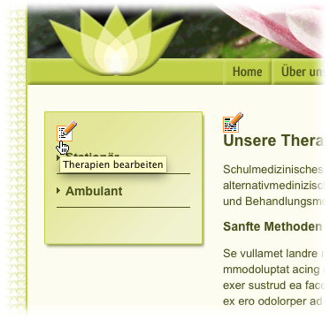
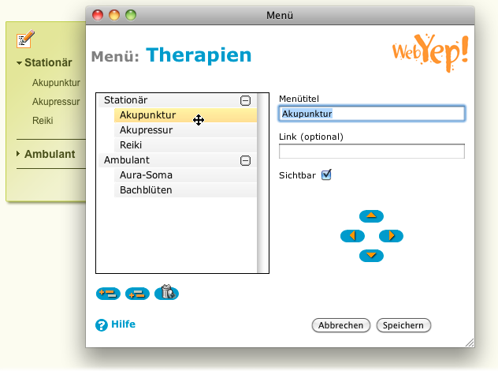
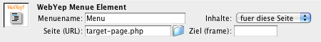

Menü

Das Symbol für das Menü-Element in der Objektpalette
Um eine WebYep-Seite - wie zB. eine Produktinfoseite - mehrfach verwenden zu können (also zB. zur Präsentation mehrerer Produkte), wird das WebYep-Menü-Element eingesetzt. Dadurch muss nicht für jedes Produkt eine eigene HTML-Seite erstellt werden.
Es genügt eine Seite, für die WebYep mit Hilfe des Menü-Elementes mehrere sogenannte "Instanzen" erzeugt. Somit kann die selbe WebYep-Seite mit verschiedenen Inhalten (für verschiedene Produkte) angefüllt werden und mit dem Menü-Element wird dann ausgewählt, welche "Instanz" der Seite, also mit den Inhalten welches Produktes, jeweils angezeigt werden soll.
Für jeden Menüpunkt wird dann also eine Instanz der selben Zielseite, sozusagen eine "virtuelle Kopie", erzeugt. Alle WebYep Elemente dieser Seite können für jede Instanz unterschiedliche Inhalte haben. Ein WebYep Bild Element in der Zielseite zum Beispiel kann ein anderes Bild zeigen, je nachdem, welcher Menüpunkt angeklickt wurde.
Dieses WebYep Element wird durch folgenden PHP Code repräsentiert:
<?php webyep_menu("Feldname", false, "die_seite.php", "einFrame", "", ""); ?> Details...
(siehe auch "Eigenschaften des Menü-Elementes" weiter unten)
- "Feldname": Ein Text – der Name für dieses Element.
- true/false: Ein boolscher Wert – der Gültigkeitsbereich dieses Elementes.
true wenn das Element in allen Seiten den selben Inhalt haben soll (global).
false wenn es auf jeder Seite, auf der es platziert ist, andere Inhalte haben soll. - "die_seite.php": Ein Text– der URL der Seite, auf welche die Menüpunkte verweisen sollen.
- "einFrame": Ein Text (optional) – der Name eines Frames (Rahmen), der für die Links der Menüpunkte als "target" (Ziel) fungieren soll.
Geben Sie einen Leertext ("") an, wenn Sie kein Frameset verwenden. - "": Ein Text – nicht mehr verwendet. Geben Sie einen Leertext ("") an.
- "": Ein Text – nicht mehr verwendet. Geben Sie einen Leertext ("") an.
Die Menüpunkte können von den BenutzerInnen direkt im Webbrowser (im Menü-Bearbeiten-Fenster) verändert, hinzugefügt, gelöscht werden und sie können auch die Reihenfolge der Menüpunkte festlegen.

Das Menü-Element in Aktion - durch Klicken auf den Bearbeiten-Knopf ("Therapien bearbeiten ")
öffnet sich das Menü-Bearbeiten-Fenster

Das Menü-Bearbeiten-Fenster
Dynamische oder statische Menüs
Ein WebYep Menü wird durch die HTML Tags <ul> und <li>, also eine Aufzählungsliste, repräsentiert. Untermenüzweige werden durch Verschachteln solcher Listen generiert. Diese Untermenüs können dynamisch auf- und zugeklappt werden, indem auf einen Untermenütitel geklickt wird, wenn in der WebYep Konfiguration (konfiguration.php) die Verwendung von JavaScript aktiviert ist (was die Standardeinstellung ist):
$webyep_sMenuType = "listJS";
Tragen Sie hier den Wert "list" ein, um nur statische Menüs ohne JavaScript zu erzeugen.
Beachten Sie, dass das Menü-Element JavaScript im "listJS"-Modus lediglich defensiv einsetzt: Wenn JavaScript nicht zur Verfügung steht, wird automatisch ein statisches Menü (in dem alle Menübäume eingeblendet sind) erzeugt. Dies stellt auch einen barrierefreien Zugang zum Menü sicher.
Wenn die Konfigurationseinstellung
$webyep_bAutoCloseMenus
in der konfiguration.php auf true gestellt wird, werden beim Öffnen eines Menüzweiges alle anderen automatisch geschlossen.
Wenn die Konfigurationseinstellung
$webyep_bRememberOpenMenus
in der konfiguration.php auf false gestellt wird, werden die geöffneten Menüzweige nicht gespeichert – sobald eine neue Seite geöffnet wird, werden alle Zweige automatisch geschlossen, außer der, zu dem die aktuelle Seite gehört.
Gestalten des Menüs
WebYep vergibt beim generieren des HTML-Codes für jeden Menüeintrag einen oder mehrere CSS-Klassen, je nachdem welcher Art der Eintrag ist (normaler Menüeintrag oder Untermenütitel) bzw. in welchem Status er sich befindet (selektiert, aufgeklappt). Indem Sie in Ihrem Stylesheet oder direkt in Ihrer Seite CSS-Stile für diese Klassen definieren, können Sie das Aussehen des Menüs detailliert beeinflussen.
Liste der CSS-Klassen:
| CSS Klassenname | Zugewiesen wenn.... |
| WebYepMenuItem | der Eintrag ein normaler Menüeintrag ist (kein Untermenütitel). |
| WebYepMenuTitle | der Eintrag ein Untermenütitel ist. |
| WebYepMenuCurrentPath | der Eintrag dem gerade selektierten Menüeintrag übergeordnet ist. |
| WebYepMenuCurrentItem | der Eintrag der gerade selektierte Menüeintrag ist. |
| WebYepMenuTitleExpanded | der Eintrag der Titel eines Untermenüs ist, das gerade ausgeklappt ist. |
| WebYepMenuFirstItem | der Eintrag der erste in seinem Menüzweig ist (z.B. für Trennlinien verwendbar) |
Jeder Menüeintrag besteht aus einem <li>-Tag der einen <a>-Tag (Link) enthält. Die CSS-Klassen werden beiden Tags zugewiesen. Manchmal werden auch mehr als nur eine CSS-Klasse zugewiesen. Der Titel eines ausgeklappten Untermenüs wird z.B. die beiden Klassen "WebYepMenuTitle" und "WebYepMenuTitleExpanded" zugewiesen bekommen.
Hinweis: Auf unserer Website gibt es Beispiele für die Verwendung von CSS zum Gestalten von Menüs: http://www.obdev.at/webyep/
Eigenschaften des Menü-Elementes

Das Eigenschaftsfenster für das Menü-Element
Menüname
Eine Bezeichnung für das Menü-Element. Der Menüname wird in der Webseite im "Bearbeiten"-Modus angezeigt, damit die BenutzerInnen bei der Eingabe die verschiedenen Menü-Elemente unterscheiden können.
Inhalte
Ist hier "für diese Seite" eingestellt, so ist dieses Menü von den Menüs anderer Seiten unabhängig, auch wenn diese den gleichen Menünamen aufweisen. Wenn Sie das Menü auf mehreren Seiten platzieren möchten, ist diese Einstellung auf "für alle Seiten" zu setzen.
Seite (URL)
Name (bzw. vollständiger URL) der Seite, die beim Klick auf einen Menüeintrag angezeigt werden soll (die Zielseite). Meist wird das der Name der Seite sein, in der sich das Menü-Element befindet (die Seite verweist also sozusagen auf sich selbst).
Ziel (frame) - bei Verwendungen von Rahmen (target frame)
Wenn die unter der Eigenschaft "Seite (URL)" angegebene Seite beim Klick auf einen Menüeintrag in einem anderen Rahmen dargestellt werden soll, ist bei der Eigenschaft "Ziel (frame)" der Name des betreffenden Rahmens anzugeben.
Hinweis: Sie können einen Menüpunkt auch direkt mit einem Link von einer anderen Seite aus anspringen, indem Sie beim Link an den URL folgendes anhängen:
?DOC_INST=x
wobei "x" für die Identifikations-Nummer des Menüeintrages steht - also zB.:
eine_seite_mit_menue.php?DOC_INST=1
Sie können die Identifikations-Nummer eines Menüeintrages leicht herausfinden, indem Sie den Menüeintrag im WebBrowser einfach anklicken und so die entsprechende Unterseite aufrufen - dann sehen Sie in der URL-Zeile (Adress-Zeile) des WebBrowsers den URL der Seite mit oben erwähntem "?DOC_INST=...".
Die ID des Menüeintrags hat nichts mit seiner Position im Menü (Reihenfolge) zu tun!